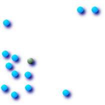

Name
ST_Centroid — Returns the geometric center of a geometry.
Synopsis
geometry ST_Centroid(geometry
g1);
Description
Computes the geometric center of a geometry, or equivalently,
the center of mass of the geometry as a POINT. For
[MULTI]POINTs, this is computed
as the arithmetric mean of the input coordinates. For
[MULTI]LINESTRINGs, this is
computed as the weighted length of each line segment. For
[MULTI]POLYGONs, "weight" is
thought in terms of area. If an empty geometry is supplied, an empty
GEOMETRYCOLLECTION is returned. If
NULL is supplied, NULL is
returned.
The centroid is equal to the centroid of the set of component Geometries of highest dimension (since the lower-dimension geometries contribute zero "weight" to the centroid).
![[Note]](images/note.png) | |
Computation will be more accurate if performed by the GEOS module (enabled at compile time). |
 This method implements the OpenGIS Simple Features
Implementation Specification for SQL 1.1.
This method implements the OpenGIS Simple Features
Implementation Specification for SQL 1.1.
This method implements the SQL/MM specification. SQL-MM 3: 8.1.4, 9.5.5
Examples
In each of the following illustrations, the blue dot represents the centroid of the source geometry.
 Centroid of a
| Centroid of a
|
Centroid of a
| Centroid of a
|
SELECT ST_AsText(ST_Centroid('MULTIPOINT ( -1 0, -1 2, -1 3, -1 4, -1 7, 0 1, 0 3, 1 1, 2 0, 6 0, 7 8, 9 8, 10 6 )'));
st_astext
------------------------------------------
POINT(2.30769230769231 3.30769230769231)
(1 row)